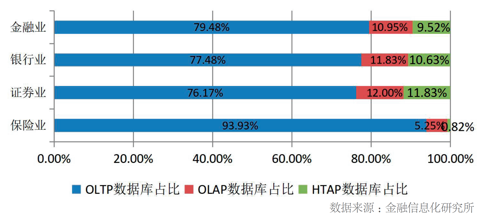
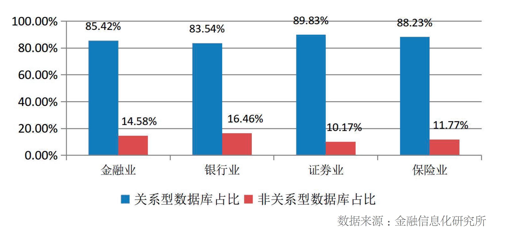

前沿 | 金融业数据库创新发展研究
金融业持续推动数据库转型升级，不同类型数据库在多个应用场景实现了应用落地，有力支持了金融业数字化转型发展，特别是我国优秀的数据库产品在金融业快速应用，显著提升金融业数据库安全可控水平。随着我国数据库技术产品在关键、核心金融系统的不断深入应用，还需进一步提升技术服务能力，创新应用模式，改善用户体验，推动我国数据库由“能用”向“好用、易用”迈进，助力构建新一代金融信息基础设施。同时，为更好支持数据能力建设，金融机构需要分类推动数据仓库、非关系型数据库等不同类型数据库的应用创新，助力数字化创新发展。此外，针对金融业大量应用的开源数据库，需要不断加大开源数据库治理、安全漏洞防范、推动建设行业开源社区等措施，加强开源数据库应用风险防范。
多种类型数据库产品赋能金融业务创新发展
集中式数据库应用占比较高，分布式数据库应用呈现增长趋势。从产品架构看，金融业数据库呈现集中式和分布式并存发展态势。其中，集中式数据库以其较强的功能黏性、优秀的系统稳定性、良好的软硬适配能力，目前在金融业的应用仍占据绝大多数份额。但随着金融业数字化转型的不断深入，分布式数据库因具备依托通用硬件、弹性扩展、内置高可用等特征，可更有效支持海量、高并发、高吞吐量的新型金融业务应用系统，在金融业的应用占比相较2022年调研结果实现了5.76%的增长。
OLTP数据库应用占比较高，OLAP和HTAP应用需求不断增加。金融业务系统的数据处理分为联机事务处理（OLTP）和联机分析处理（OLAP）两类。面向客户交易类、业务办理等系统通常选择OLTP类数据库，而报表类、分析类系统通常选择OLAP类数据库。随着金融业数字化进程加快，海量数据让OLTP和OLAP数据库的边界越来越模糊并不断融合，在同一个系统中同时需要OLTP和OLAP能力，即HTAP数据库的需求越来越多。目前在金融业非融合的OLTP数据库占比仍然较高，为76.83%。同时，不同细分行业中，银行业和证券业应用OLAP和HTAP数据库占比相对较高。详细情况如图1所示。

图1 金融业OLTP、OLAP、HTAP数据库占比情况示意图
非关系型数据库在金融业加快探索实践。金融业具有客户量大、业务场景复杂等特点，需要存储处理多种类型数据。金融业务需要挖掘海量基础数据所蕴含的丰富信息资源，如隐藏的用户偏好、消费习惯、交易习惯、社会关系等，为非关系型数据库提供了丰富的应用场景，加快了非关系型数据库创新应用。目前，非关系型数据库在金融业应用占比已达到14.58%。详细情况如图2所示。

图2 金融业关系型、非关系型数据库占比情况示意图
开源数据库在金融业得到广泛应用。与闭源商业数据库相比，开源数据库具有源码公开、使用成本低、获取途径广、对外开放、功能丰富等特点。这些优点使得开源软件得到广大开发人员的青睐，使用人员可在原有代码基础上进行业务适配修改，活跃的社区支持也为日益复杂的业务需求贡献了越来越多的解决方案，从而使得开源数据库在金融业实现了广泛应用。目前，约90%的金融机构都应用了开源数据库支撑业务发展。金融业核心系统数据库创新实践分析
随着我国数据库产品在金融业的不断推广应用，数据库改造逐渐深入到核心系统，金融机构普遍认为我国数据库产品在核心系统应用还有较大提升空间。
1.核心系统对数据库应用提出更为严格需求。核心系统被喻为金融IT建设皇冠上的明珠，是最为重要的关键信息系统，具有海量用户、高并发、数据敏感以及7×24小时的不间断服务等显著业务特征。相对其他IT系统，对数据库的功能、性能、鲁棒性及安全性等方面均提出了更高的要求。在功能方面，核心系统新引入的数据库除了支持传统数据类型、对象类型、SQL以及PL/SQL等基本功能外，特别需要在驱动、语法、架构等方面实现与现有国际主流数据库的兼容。且需要支持常用的数据接口和标准协议。在性能方面，核心系统对性能的极致要求，需要数据库具备极强的高并发、高速读写能力，以及满足低延迟、强实时性要求，并具备灵活的扩展性。在鲁棒性方面，核心系统数据库需要具备稳定性、高可靠性和高可用性。在安全方面，核心系统数据库要具备“3A+E”（认证，Authorization;授权Authentication;审计，Audit;加密Encryption）的能力。2.当前核心系统数据库应用面临多重挑战。一是我国数据库产品在核心系统应用还存在多方面能力不足。我国数据库产品在SQL优化器、全局事务管理、并发控制、列存和行列混存、共享集群等多个关键核心技术上仍然需要打磨和进一步提升，在执行计划、资源利用、任务并行、算法、IO等方面与国际商用主流数据库产品仍有一定差距。二是我国数据库产品灾备和数据同步水平还难以完全满足核心系统需求。我国数据库产品在异地RPO、故障切换和灾难恢复时间等灾备能力与核心系统要求还有一定距离。同时，在采用新旧系统并轨运行模式确保核心系统转型的平稳过渡、实现核心系统异地容灾，以及在核心系统数据作为周边系统为数仓和客服系统等提供实时数据时，都需要进行数据同步，对数据库的数据同步能力提出很高要求。三是核心系统数据库创新实施及运维管理难度大。首先是核心系统数据库选型难。其次是核心系统数据库的存储过程、函数等程序可移植性差。另外，为确保业务连续性，核心系统数据库创新实践通常采取新老系统并行策略，极大增加了开发测试难度。再者，现有数据库中存量数据大，迁移工具有限，导致迁移周期长。最后，由于运维的整体自动化、智能化水平有限，不同类型技术产品还难以做到统一运维管理，运维难度大。3.核心系统数据库应用经验及建议。一是加大产用联合创新力度，基于核心系统应用场景打磨优化产品，提升服务能力。数据库厂商在自我研发、创新同时，还应加强与金融机构的联合创新力度，充分利用在核心应用中复杂、高压、苛刻的场景，对产品进行反复打磨和优化，补齐在核心技术、灾备能力等短板，满足核心系统数据库创新实践需求。二是安全与应用并重，合理选型，高效推动核心系统数据库创新实践。核心系统在选择新引入数据库时，要综合考虑业务需求、自身技术实力、成本及数据库产品特性，进行合理选型。针对传统核心系统与数据库采取的紧耦合模式带来的改造难度风险，核心系统数据库创新实践需秉承多品牌的策略。同时，需要在技术路线、研发标准方面进行统一约束规范，尽量选择对业务侵入性比较小的数据库，最大限度实现应用与数据库解耦。三是加大生态工具的研发应用，支持核心系统数据库创新实践。在数据库迁移方面，梳理核心系统常用数据库的特性，分析新引入数据库的实现差异，开发自动化迁移工具。在数据同步复制方面，优化异构数据库增量数据复制工具。在数据库开发方面，研发友好的功能强大的客户端工具支持数据库设计、开发。在测试方面，研发覆盖单元测试、功能测试、性能测试、生产验证和测试管理过程的自动化测试工具链。在数据库运维方面，通过完备的数据库运行状态检查、监控、备份、恢复的接口和工具，为核心系统稳定运行、数据安全提供保障。四是加强核心系统数据库创新实践的统筹管理、经验总结，逐步形成指导行业实践的方法论。核心系统数据库创新实践，应纳入整体“一把手”重大工程规划中，确保资源投入、精心设计、稳步推进。同时在核心系统数据库升级优化时，要充分总结经验，编写部署方案、技术方案、数据库迁移技术指引、数据库迁移测试白皮书、各类工具使用手册等涵盖数据库升级优化全过程的指导手册，形成整套的系统性技术资产、解决方案和方法论。不同类型数据库助力金融业数据能力建设
随着金融业数字化转型深入推进，金融机构如何尽快提升数据能力，从海量数据中挖掘有效信息支持业务发展和经营决策，成为金融业务运转和实现转型增长的关键。其中数据仓库持续迭代更新、非关系型数据库不断涌现，在金融机构数据能力建设中发挥重要作用。
1.金融业数字化快速发展对数据库提出新需求。一是金融业数字化转型深入推进对数据仓库的功能、性能、扩展性和安全性提出更高要求。在功能方面，要求承载数据仓库的数据库系统要支持更大规模的数据存储管理、服务时效性、混合负载能力等。在性能方面，对查询、响应效率、高并发、批量加工作业时间窗口等提出了更高的要求。在扩展性方面，随着金融数据量不断爆发式增长，数据的存储、计算需求会随之快速增长，是否具备便捷的扩展、伸缩能力成为金融机构对数据仓库的刚性需求。在安全性方面，要具备数据丢失或损坏时的恢复能力、对敏感数据的保护能力，以及对人为有意或无意的误操作的隔离能力，确保数据和系统的安全。二是数字金融快速发展对非关系型数据库提出更多需求。随着数字金融快速发展，数据规模迅速增长，金融机构对海量数据的深度分析、事务间的复杂关联分析、数据随时间的变化分析越发重要；人工智能和深度学习技术和应用的迅速发展，使科学计算中的高维向量数据、影音/图片/文档等多媒体的非结构化数据大幅度增加，存储管理这些多模态信息需求也快速增加，都对非关系型数据库提出更多的应用需求。2.分类推动各类数据库应用创新，促进数据能力提升。一是加大数据仓库技术创新。通过利用MPP架构、列存储、智能索引、向量化计算等多种技术，提升在大数据量、多表关联复杂计算的能力，提升数据吞吐量和查询计算效率，减少业务决策的停顿等待时间，优化查询能力。利用湖仓一体架构、存算分离架构，满足结构化、非结构化数据存储和计算的多源融合需求，打通多种数据库之间的壁垒，支持构建统一的数据分析平台，满足大数据量、高并发的数据查询请求，为不同的业务弹性分配所需算力，提升数据吞吐量、并发能力。此外，利用HTAP技术助力混合负载类业务系统建设。二是分类推动不同非关系型数据库应用发展。目前键值数据库在金融业的应用较多，在应用时可针对不同的数据规模和业务场景，合理选择分布式集群和读写分离架构，同时加大键值数据库的高可用架构建设。对正在快速应用图数据库，注重高效的图数据处理能力、大规模图数据分析能力、可视化和全生命周期的管理能力的提升；采用支持ISO GQL标准语言的图数据库产品，提升图数据库的标准化水平；针对不同阶段和业务场景，合理选择单机架构或分布式架构图数据库。对于向量数据库，针对高维数据，选择合适的向量索引方法；对于高维向量数据，进行必要的降维或特征选择；同时考虑使用并行计算、分布式集群部署、压缩技术，以满足金融数据大规模处理和实时查询的需求，减少高维向量数据的存储成本。开源数据库应用风险分析
上世纪90年代，随着MySQL 1.0版本和PostgreSQL的Stable版本的发布，开启了快速发展和广泛应用的潮流和趋势，随即国内开源数据库也迅速跟进。近年来，华为、阿里、蚂蚁、腾讯、平凯星辰等我国主要数据库厂商推出的开源数据库在金融行业的应用力度逐步加大，为金融机构有效防控单一供应商风险和日益复杂的供应链安全风险提供了选择。
1.金融业开源数据库应用面临的风险。一是开源协议风险。开源产品通常需要根据特定的开源协议进行发布和分发，不同开源协议的要求和限制差别较大，给金融机构的选择、使用和分发带来困扰。而且开源产品可能嵌套其它开源产品的代码，而这些开源产品可能遵循不同的开源协议，对于用户而言，这是一个极复杂而且隐蔽的风险。同时，开源许可证变更也为金融机构判断评估适用性增加了难度。二是安全漏洞风险。开源数据库是由世界范围内的个人自愿贡献代码，由于错误的代码实现或设计缺陷、开源社区维护度不足、使用者未能及时更新软件版本等原因，可能存在漏洞和安全问题。三是知识产权、代码感染风险。开源数据库细分为两种：一种是源代码由国内数据库厂商完全自研后选择开源模式进行市场推广。一种是国内数据库厂商封装了国外开源数据库内核代码，在此基础上二次开发的代码必须遵守国外开源协议限制，将二次开发的源代码公开，事实上出现了代码感染，而且会被国外开源软件体系限制，存在知识产权风险。四是开源停服、断供风险突出。当前，开源软件供应链形势愈加复杂和多样化。一旦开源数据库项目停止开发和维护，金融机构将无法升级数据库系统和获取新功能，亦无法得到此开源数据库相关的技术支持，甚至可能因为缺乏维护导致安全漏洞无法及时修复，会严重影响存量信息系统的运行维护，并带来大量的系统更新需求和额外的成本及风险。五是政策的不确定性风险。相对闭源的专利技术，开源数据库难以通过传统的专利和知识产权保护手段来证明自己的创新性和价值，导致开源数据库在认定中面临难以评估和认定的困境。目前，金融机构大量使用开源数据库，开源数据库能否认定为符合政策要求对金融机构在数据库产品技术选型、升级迭代策略等方面具有较大影响，导致金融机构在数据库领域的规划布局存在较大的不确定性，也面临较大的技术路线选择纠错风险。六是掌控和服务能力不足风险。应用开源数据库需要金融机构具备较强的掌控能力，开发运维团队需要理解和掌握数据库系统的原理、架构、配置和管理等方面的知识，具备一定的自主解决问题能力，而大量中小金融机构显然难以满足掌控能力要求。另外，相比商业数据库提供的全面技术支持和售后服务，开源数据库服务通常依赖于社区支持和开发者社区的帮助，而社区响应的及时性和质量并不一定能够满足金融机构的需求。2.多措并举防范开源数据库应用风险。一是加大开源数据库治理，降低开源数据库使用风险。金融机构需要设置专人进行开源数据库治理，对开源数据库进行合理合规管控。在选择开源数据库时，金融机构首先要考虑其是否安全可控，然后全面考虑其版本稳定性、社区活跃度和更新频度。同时，在引入开源数据库前，金融机构应进行充分测试和评估。另外，配备专业的法律团队或与外部专业法律机构合作，对开源数据库的开源协议进行分析、提供专业的法律支持。二是提升开源数据库安全防范水平，确保安全生产。金融机构应加快建立软件成分清单生成与使用规范，标准化软件成分和软件成分可视化流程。同时，金融机构应配备专业的安全检测工具、漏洞扫描工具和安全人员，对开源数据库进行定期检查，发现潜在的漏洞和安全风险，并进行妥当评估、处置和回顾。充分利用第三方代码检测和第三方安全评估机构的力量，获得开源数据库独立的安全建议和解决方案。通过使用强密码、多因素身份验证和访问控制列表等方法，限制对开源数据库的访问权限。三是推动金融开源数据库社区建设，全面提升对开源数据库的掌控和服务能力。推动建设金融开源数据库社区，加强产学研用多方协作，充分调动行业机构力量。同时，依托社区对开源数据库进行测试评估、漏洞风险通告，组织开展开源数据库的技术交流、研讨，并通过开源社区博客、视频教程、在线文档等资源，提升金融机构对开源数据库的掌控能力。金融业数据库应用展望
未来三至五年是金融业数据库创新发展的关键时期，也是高成长时期，无论从广度、还是深度上都将迎来巨大的突破和发展。
一是我国主流数据库产品成熟度将进一步提升。随着核心系统数据库转型加速，金融机构会持续加大对数据库产品的投入力度，为产业侧提供开发和优化数据库产品的动力和资源，尽快弥补我国数据库产品在功能、性能、异地灾备、数据同步等核心技术能力的差距，丰富配套工具，降低实施运维难度，推动我国数据库产品的成熟和稳定。同时，基于核心系统特性及其他非数据库技术要求，也将倒逼数据库服务能力提升、推动我国数据库由“能用”向“好用、易用”转变。目前，万里数据库已在金融行业沉淀了多项核心能力，以信创数据库产品入选金融信创优秀解决方案，并先后通过首批分布式数据库金融场景应用评估和首批金融开源技术服务能力评估，以一站式数据管理平台和定制化解决方案，赋能金融业关键信息基础设施国产化与业务数智化升级。
二是金融核心系统数据库转型升级将稳步推进。金融业数据库转型模式由政策驱动转向自觉行动。在主管部门直接指导、推动下，金融业完成了多轮转型试点，实现了从“0”到“1”的突破。且随着国际形势愈加复杂多变，全行业实现了从上至下理念的转变、认识的提升，确保关键软硬件技术供应链安全稳定已成为上下共识。经过近几年积累，我国数据库技术产品供给能力明显提升，应用生态不断完善，大量试点应用为金融核心系统数据库转型提供了宝贵的可借鉴经验，金融机构必将直面核心系统数据库转型的“硬骨头”。
三是新技术与业务场景将推动金融数据库创新发展。随着数字化转型深入推进，金融数据库应用创新将迎来新一轮高潮。数据仓库、数据湖、大数据等技术融合应用创新，不断提高支持数据能力建设的水平。不同类型的非关系型数据库加快应用创新，适应数字经济时代，海量、多维数据处理及不同细分场景的应用要求。同时，数据库也将逐步从分布式向云原生转型，提供超大并发支持能力和更强大弹性伸缩能力。基于人工智能的数据库AI优化器、AI分析引擎，AI自治运维系统等，将全面提升数据库的查询、交易处理速度，提供更智能、准确的业务洞察和风险评估能力，实现高效的自动化数据库运维。